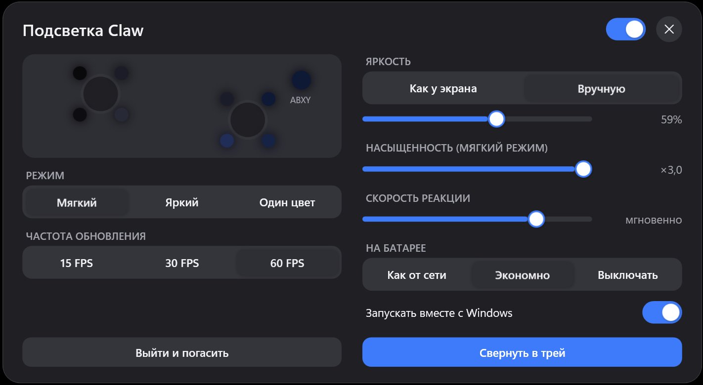
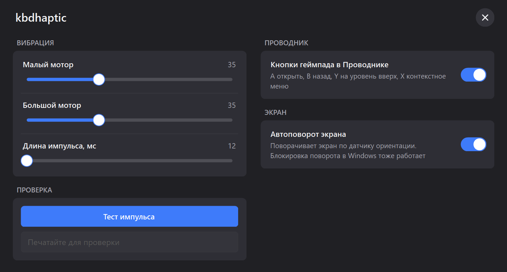

Специализированные утилиты для MSI Claw
Программные решения, разработанные специально с учетом аппаратных особенностей консолей линейки Claw.
SaySo: Голосовой помощник и диктовка

Голосовой помощник для Windows, работающий прямо на встроенном нейропроцессоре Intel NPU (Lunar Lake). Позволяет вводить текст в любые поля ввода в играх и приложениях, удерживая назначенную кнопку, а также управлять системными функциями консоли.
- Диктовка с голосовой правкой («удали слово», «замени на») без облачных задержек
- Прямое управление мощностью TDP, вентиляторами и паузой игр через интеграцию с ClawTweaks
- Автоматическое назначение действий на задние лепестки M1 и M2, включая профили конкретных игр
- Интерфейс на C# WPF с автоматической перестройкой в одну колонку при вертикальной ориентации экрана
ClawAmbilight: Динамическая подсветка стиков

Адаптивная подсветка колец аналоговых стиков и кнопок ABXY по картинке на экране, работающая по принципу телевизоров Ambilight. Кадр захватывается через DXGI Desktop Duplication и усредняется прямо на видеокарте, потребляя около 1.5% одного ядра центрального процессора и не снижая FPS в играх.
- Режимы «Мягкий» (спокойные цвета сцены) и «Яркий» (динамический акцент на полной яркости)
- Пресет «Как Joy-Con» с классическими неоновыми синим и красным цветами Nintendo Switch
- Прямая запись байтов через HID vendor-отчет 0x0F в RAM контроллера без износа микросхемы флеш-памяти
- Автоматическое снижение частоты опроса экрана и обновления подсветки при переходе на батарею
kbdhaptic: Виброотклик и автоповорот

Утилита решает две аппаратные особенности портативных консолей на Windows 11: добавляет тактильную виброотдачу встроенных моторов геймпада при наборе текста на сенсорной клавиатуре и восстанавливает аппаратный автоповорот экрана.
- Короткий импульс моторов XInput на каждое экранное нажатие по интерфейсу IFrameworkInputPane
- Навигация в окнах Проводника кнопками геймпада (A: открыть, B: назад, Y: вверх, X: меню)
- Обход ограничения датчика Simple Device Orientation через WinRT с вызовом ChangeDisplaySettingsEx
- Синхронизация с системным тумблером «Автоповорот» в быстрых настройках панели задач Windows